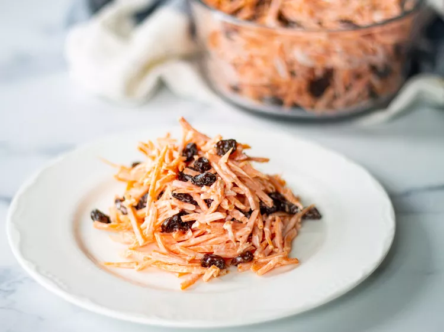

This is a carrot salad
Ingredients
- 1 pound shredded carrots
- 1 and 1 quarter cup raisins
- 2-3 tablespoons mayonnaise, or to taste
- 1 teaspoon lemon juice
- Quarter teaspoon salt
Directions
- Mix raisins and shredded carrots in a large serving bowl.
- Whisk mayonnaise, lemon juice, and salt in a small bowl until smooth. Pour over carrot mixture; stir until carrots and raisins are completely coated. Refrigerate until chilled, at least 30 minutes.